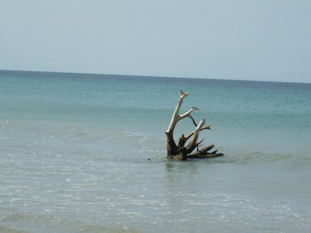

5 beaches nobody else writes about
Not Unawatuna. Not Mirissa. Quiet, uncommercialised stretches of coast found by our community.

Rekawa Beach
A turtle nesting beach south of Tangalle. No hotels, no touts — just a conservation project and one of the only places in Sri Lanka to see nesting leatherbacks at night. The community contacts at Rekawa Turtle Conservation Project will take you out after dark.

Okanda Beach
At the entrance to Kumana National Park, far east of Arugam Bay. Wild camping, almost no one else, and good snorkelling on the reef. 4WD or motorbike recommended to get here — makes it self-filtering.

Kalpitiya Lagoon
A vast shallow lagoon perfect for kite surfing and dolphin watching — the dolphin pods here number in the hundreds. Almost no infrastructure means almost no tourists. Stay in Kalpitiya town (basic guesthouses) and hire a boat from the fishermen.

Casuarina Beach, Karainagar
The far north has been largely off the tourist map since peace returned. Casuarina is a long, deserted beach backed by casuarina trees near Jaffna — calm, clean, and you may have it to yourself. Local guesthouses in Jaffna are welcoming and curious to host visitors.

Hiriketiya Back Bay
Not the main Hiriketiya bowl — walk around the rocks to the back bay. Half the people, calmer water, and local fishermen bring their boats in at sunrise. Best visited 06:00–09:00 before the day crowd arrives.